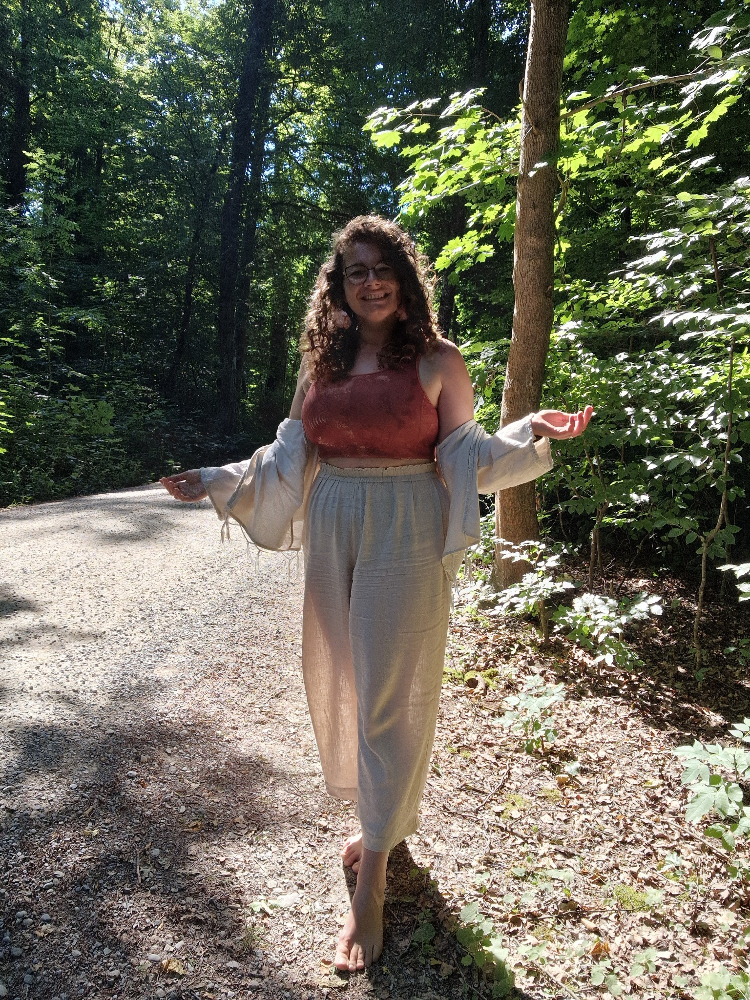
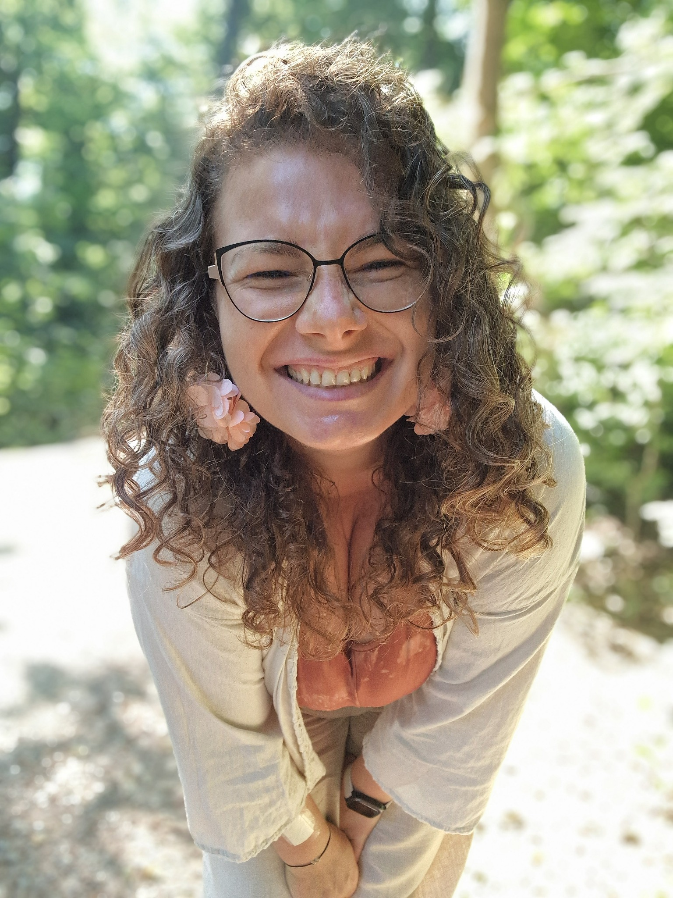
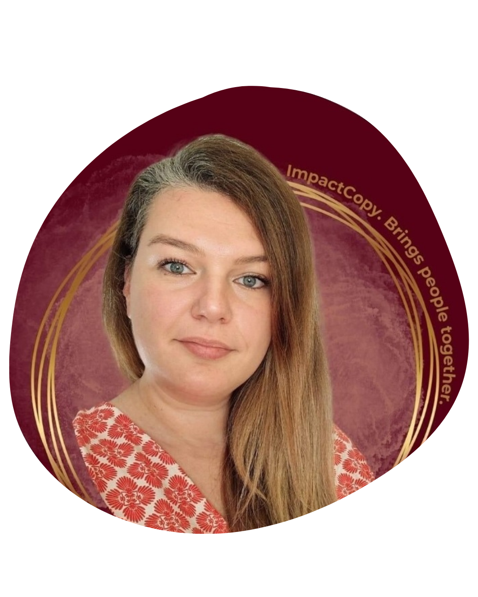

“Working with Roberta helped me uncover the inner limitations and emotional barriers I didn’t even realise I had. I became more aware of my strengths, more confident in my decisions, and more able to respect my own time and energy.”Andra

Inner Bloom
Private 1:1 coaching for the woman who is ready to remember who she is.
A safe, intuitive space to release what weighs you down, reconnect with yourself, and create a life that feels true, aligned, and deeply yours.
Book a free call →
A space built around you
The capable one. The strong one. The one who always figures it out. Somewhere along the way, you stopped checking how you actually feel.
Inner Bloom is a private coaching journey for when you are ready to stop performing and start listening to yourself again.
You feel overwhelmed, even when everything looks fine.
You are tired of overthinking and never feeling fully at ease.
You sense you have lost connection with yourself somewhere along the way.
You are ready for honest support that feels safe and deeply personal.
Reconnect with what is true for you.
Release what no longer serves you.
Build trust in yourself and your choices.
Live with intention, intuition and integrity.

How we work together
Every session blends conversation with embodied practices, nervous-system support, intuitive tools and grounded action.
We begin where you are. We explore what is underneath the pattern. We create safety for change, then build a way forward that belongs to you.
Client love
“Working with Roberta helped me uncover the inner limitations and emotional barriers I didn’t even realise I had. I became more aware of my strengths, more confident in my decisions, and more able to respect my own time and energy.”Andra
“I started listening to myself more, asking what I truly wanted instead of following others’ expectations. Bit by bit, clarity replaced confusion, and calm replaced chaos.”Magda

“Coaching with Roberta helped me transform my present. Each session brought emotional awareness and healing, and the process had a ripple effect across my personal, professional and relational life.”Mihaela

“Roberta created a safe and supportive space where I could rediscover parts of myself buried under self-criticism. I learned to speak more kindly to myself and return to clarity, courage and self-love.”Tanita
If you are wondering whether Inner Bloom is the right place for you, let’s have a short conversation. No pressure, just space to explore where you are and what you need.
Book a free call →